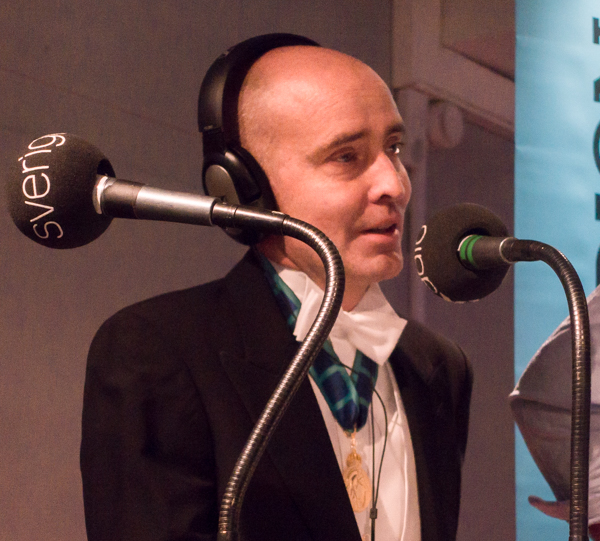
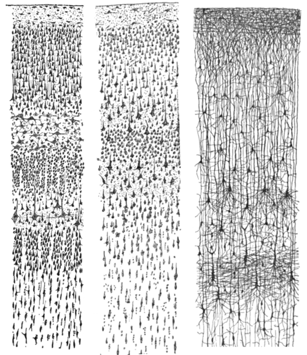

Life and Cells
肌も腸の粘膜も、数週間のうちに入れ替わる。骨も、心臓の筋肉も、少しずつ新しくなっていく。だが、大脳皮質のニューロンと、眼の水晶体の中心と、卵子は、生まれた日からそのままだ。「七年で別人」というのは、半分しか正しくない。
フリセンら(カロリンスカ研究所)が、核実験由来の炭素14をDNAから検出して細胞の「生まれた年」を直接測定する手法を『Cell』誌に発表。
この年、2月にYouTubeが設立、7月にはロンドン同時爆破、8月末にハリケーン・カトリーナが米南部を襲った。
この論文から始まる一連の研究が、それまで推測でしかなかった組織ごとの細胞の寿命を、数字で書き換えていった。
朝、枕の上に数本の髪が落ちている。指先の小さな傷は、いつの間にかかさぶたになり、数日後には跡形もなくなっている。爪を切り、垢をこすり落とし、トイレで排泄する。体は、常に何かを捨てている。
体が物質として絶え間なく入れ替わっているらしい、ということは、おそらく誰もが漠然と知っている。「七年で細胞は全部入れ替わる」という話も、どこかで聞いたことがあるかもしれない。
だが、本当にそうなのか。体のどこまでが入れ替わり、どこが入れ替わらないのかを、正確に答えられる人は少ない。
あなたの年齢を入れると、体のどこが何度入れ替わってきたかが見える。そして、いまだ生まれた日のままの場所もある。
古代ギリシャの川辺に、ヘラクレイトスという哲学者がいた。彼は川を見ながら、同じ川には二度入れないと言った。なぜなら、入った瞬間にその水はもう下流へ流れ去っているからだ。水は絶えず入れ替わっているのに、川は川として在り続ける。これは当時、物質と同一性をめぐる難問として受け取られた。
"We both step and do not step in the same rivers. We are and are not."
我々は同じ川に入ると同時に、入らない。我々は在ると同時に、在らない。
— ヘラクレイトス(紀元前500年頃)、断片B49aより
人間の体にも、同じことが言える。皮膚は垢となって剥がれ落ち、毛髪は抜け、爪は切り取られる。腸の内壁はさらに激しく、数日ごとに丸ごと脱落する。血液の赤い細胞は四ヶ月もすれば新しいものに置き換わる。つまり、鏡の前の自分と、一年前の自分では、体を構成している物質物質
体を構成するタンパク質・脂質・糖・水などの総体。原子レベルで見れば、摂取した食物や水から供給され、排泄や剥脱によって失われる。の大部分が違っている。
ではなぜ、自分は自分だと感じ続けていられるのか。物質が入れ替わっているのに、記憶は残り、性格は保たれ、名前は同じだ。この感覚と事実のずれは、たんなる哲学の問題ではない。2005年、ある研究室が、このずれを数字で測る方法を発見した。

ヨナス・フリセン
Jonas Frisén
幹細胞研究者 / カロリンスカ研究所
スウェーデンの分子生物学者。冷戦期の核実験で大気中に撒かれた炭素14炭素14(14C)
自然界にごく微量存在する放射性の炭素同位体。宇宙線によって常時生成されるが、1950〜60年代の大気圏核実験によって一時的に大気中濃度が約2倍に急増した。が、その時点で分裂した細胞のDNADNA
細胞の遺伝情報を担う二重らせん構造の分子。一度分裂完了後はほとんど入れ替わらず、当時の炭素14濃度が「生年月日のスタンプ」として残り続ける。に年代印として残ることに気づき、これを用いてヒトの細胞の生まれた年を直接測定する手法を確立した。
Photo: Frankie Fouganthin / Wikimedia Commons / CC BY-SA 4.0(トリミング・リサイズ改変)
フリセンが使ったのは、20世紀が残した、ある不穏な副産物だった。1945年の広島・長崎以降、大気圏内で行われた核兵器の実験によって、大気中の炭素14の濃度は一気に跳ね上がった。1963年に部分的核実験禁止条約が結ばれると、濃度は指数関数的に下がっていき、今もゆっくりと減り続けている。
図1:大気中 14C 濃度の時系列。1963年のピークから現在までの指数減衰が「ボムパルス」と呼ばれる。
この「ボムパルスボムパルス(bomb pulse)
1950〜60年代の核実験によって大気中の炭素14濃度が一時的に2倍近くに急上昇し、その後指数関数的に減衰した現象。その年に生まれた細胞のDNAに当時の濃度が「刻印」されるため、細胞の生成年齢を遡って測定できる。」と呼ばれる大気の振幅は、人間の体を通って食物となり、新たに作られる細胞のDNAに組み込まれる。細胞が分裂してDNAが複製されるとき、そのときの大気濃度が「スタンプ」として記録される。分裂が完了してしまえばDNAはほとんど変化しないから、後年そのDNAに含まれる14C濃度を精密測定すれば、その細胞が生まれた年が逆算できる。
図2:ボムパルス法の仕組み。大気→食物→細胞DNAと取り込まれた 14C が、分裂停止後は時計のように静止し、後年の測定で生成年を教える。
よくある誤解
「体の細胞は7年で全部入れ替わるから、7年前の自分とはもう別人だ」
実際は
体全体の細胞の平均年齢が約7〜10年というフリセンの発見が変質したもの。腸上皮は数日で入れ替わる一方、大脳皮質のニューロンは生涯ほぼそのまま。組織によって桁で違う。
よくある誤解
「脳の細胞も、ゆっくりとはいえ、少しずつ新しくなっている」
実際は
大脳皮質のニューロンは出生時から一度も入れ替わらない。記憶や言語を司るこの領域の神経細胞は、死ぬまで同じものが働き続ける。海馬の一部のみ、限定的な新生が議論されている。
よくある誤解
「心臓の筋肉は入れ替わらない。だから心筋梗塞は治らない」
実際は
心筋細胞は毎年約1%(若年期)、年齢とともに減速して約0.45%(75歳)が入れ替わる。生涯でおよそ45%の細胞が新しいものに置き換わっている、というのが2009年の研究の結論。
ここで一度、数字を体にぶつけてみる。スライダーであなたの年齢を指定すると、主要な組織が、あなたの生まれた日から今日まで、何回入れ替わってきたかを時間軸で描く。入れ替わりが速い組織ほど、帯が濃く塗りつぶされる。生涯入れ替わらない組織は、出生の左端から現在の右端まで、赤い一本の線が貫く。
スライダーを動かしてみてほしい。若い年齢では薄く、高齢になるほど腸や血球の帯は真っ黒になる。だが、何度スライダーを動かしても、いちばん下の三つの帯だけは、一本の線のまま変わらない。
平均寿命の80歳になるまでに、腸の内壁は9千回以上、肌は千回以上、血液は240回ほど入れ替わっている。そのすべてを足し合わせると、平均して1日に約3,300億個の細胞が新しくなっている。体重60kgの人なら、約80グラム分の細胞が毎日作られ、毎日失われている。計算すれば、一年で数十kg分の物質が入れ替わっていることになる。
1日に入れ替わる3,300億個の細胞のうち、実はその90%が血液と腸の内壁が占めている。残り10%のさらに一部が皮膚で、その他の組織が入れ替わる速度は、これらに比べると桁違いに遅い。
図3:人体のターンオーバーは、ほぼ「血液と腸」で説明できる。筋肉・骨・脳の寄与は極めて小さい。
この偏りには、生存上の理由がある。外界と接する組織は、絶えず傷を負う。腸の内壁には食物と消化酵素と微生物が押し寄せ、皮膚には紫外線と摩擦と乾燥が降り注ぐ。血液は呼吸のたびに酸素ストレスを受け、酸素を運ぶ赤血球は核を持たず、壊れやすい。だからこれらの組織は、常に若い細胞を大量生産し、壊れる前に捨てる戦略で進化した。
逆に、脳は頭蓋骨と血液脳関門で厳重に守られている。外界と直接接しない分、激しいターンオーバーターンオーバー(turnover)
細胞の入れ替わり。古い細胞が死滅し、新しい細胞が補充される動的平衡のこと。組織ごとに速度が大きく異なる。は不要で、むしろ入れ替えないことに価値がある。ニューロンは無数の他のニューロンと物理的なシナプスで繋がっており、この配線こそが記憶そのものだ。一つ死ぬたびに新しいニューロンを入れて配線を繋ぎ直していたら、記憶は持ち得ない。

図4:サンティアゴ・ラモン・イ・カハルサンティアゴ・ラモン・イ・カハル(Santiago Ramón y Cajal, 1852–1934)
スペインの神経解剖学者・組織学者。Golgi染色を用いて脳の個々のニューロンを初めて可視化し、脳が離散した細胞のネットワークであること(ニューロン説)を証明した。1906年ノーベル生理学・医学賞。手描きの素描は現在も神経科学の教科書に使われる。が描いた大脳皮質のスケッチ(1899年)。左が成人の視覚野、中央が成人の運動野、右が生後1.5ヶ月児の皮質。この時代に彼が顕微鏡越しに見ていた個々のニューロンと、今あなたの脳で働いているニューロンは、同じ種類の細胞 — そして多くの場合、あなたが生まれた日から、ずっと同じ細胞だ。
出典: Santiago Ramón y Cajal『ヒト大脳皮質感覚領の比較研究』(1899) / Wikimedia Commons / Public Domain
一方、同じ「入れ替わりにくい組織」のなかでも、完全に静止しているわけではないものがある。心臓は死ぬまで止まらず、毎秒一回以上の収縮を繰り返す。その過酷な労働のなかで、心筋細胞はどれくらいの速度で入れ替わっているのか。
図5:心筋は若年期で年1%、高齢期で年0.45%。一度の梗塞で失われた細胞は、数十年かけてもごく一部しか戻らない。Bergmann et al., Science (2009) の推定曲線。
組織ごとの差を、もう少し掘ってみる。
小腸の絨毛の先端にある上皮細胞は、絨毛の根元にある幹細胞から絶えず補充される。新しく生まれた細胞は絨毛を押し上げながら先端へ移動し、3〜5日後には消化管内に脱落する。剥がれた細胞は、便に混じって体外へ出ていく。
食物と酵素と腸内細菌という過酷な環境のなかで、傷ついた細胞を修理するより、使い捨てた方がコストが低い。この戦略が、進化の過程で選ばれた。
骨はコンクリートのように一度固まったら終わりではない。破骨細胞が古い骨を少しずつ溶かし、骨芽細胞が新しい骨を積み直している。この二つの細胞の共同作業で、人間の骨組織は約10年をかけて全置換される。
だからこそ、宇宙の無重力環境に滞在した宇宙飛行士は骨量を失い、地上での運動負荷がないと骨は再建されない。骨は静的な構造ではなく、絶えず再設計される動的な建築物だ。
大脳皮質のニューロンは、出生時からほぼ入れ替わらない。他のニューロンと数千から数万のシナプスで接続しており、その配線パターンそのものが記憶と性格を担っている。
細胞を置き換えれば、配線がリセットされ、記憶が失われる。だから脳は、細胞を入れ替える代わりに、一つ一つのニューロンを生涯壊れないように徹底的に保護する戦略を採った。血液脳関門、高密度なグリア細胞の支援、厳密な代謝調節 — すべて「同じニューロンを長く使い続ける」ための装置だ。
ボムパルス法の美しさは、20世紀の最悪の発明の一つが、別の領域で思いがけぬ精密な時計として機能しているという点にある。冷戦の恐怖が撒いた放射性の砂が、半世紀後、生きている人間の体の中で、いつその細胞が生まれたのかを正直に答えていた。
あなたの体は、あなたが思っているよりずっと動的だ。指先の皮膚は今月のもの、腸の内壁は先週のもの、赤血球は4ヶ月前のもの。肝臓の多くは昨年、骨の大半はこの十年のあいだに新しくなった。脂肪細胞でさえ、毎年10%が入れ替わっている。
しかし、その動きの底に、生まれた日からそのままの部分がある。大脳皮質のニューロン。眼の水晶体水晶体(lens)
眼の前方にあるレンズ。中心部の繊維細胞は胎児期に作られたまま、生涯入れ替わらない。血管がなく、細胞の補充経路も断たれているため、老化とともにタンパク質が変性して白濁するのが白内障。の中心にある繊維細胞。女性の場合、胎児期に約100万個で固定されてそれ以上増えない卵子卵子(ovum)の起源
女性の卵子は、本人が母親の胎内にいる胎児期の時点で約100万個がつくられ、以後、新しく補充されることはない。思春期以降、毎月の排卵で消費され、閉経までに大部分が失われる。つまり、あなたが存在しうる原点の細胞は、あなたの母親が祖母のお腹にいた頃にはもうそこにあった。のすべて。記憶を持ち、世界を映し、次の世代を作るためのこの三つの場所は、あなたの生まれた日に完成されて、そのまま今もそこにある。
"The atoms come into my brain, dance a dance, then go out; there are always new atoms, but always doing the same dance, remembering what the dance was yesterday."
「原子は私の脳に入ってきて、踊りを踊り、そしてまた出ていく。いつも新しい原子だが、いつも同じ踊りを踊り、昨日の踊りを憶えている。」
— リチャード・ファインマン『科学の価値(The Value of Science)』1955年
テセウスの船の問いは、抽象的な思考実験ではなく、あなたの体そのものに突き刺さっている。そしてこの問いへの体なりの答えは、哲学者が出したどの答えとも違っていた。物質は流れる、記憶は流れない。入れ替わる部分と、入れ替わらない部分。二つが同居することで、あなたは「同じあなた」で居続けている。
同一性の系譜
プルタルコス『英雄伝』— テセウスの船
古代アテネに保存されたテセウスの船は、腐った板を新しい板に交換し続けているうちに、やがて全ての板が入れ替わっていた。それは同じ船なのか、別の船なのか。紀元前から問われ続ける同一性の難問。
ヘラクレイトス — 万物流転
「同じ川に二度入ることはできない」。変化そのものが存在の本質であり、静止した実体を前提とする考え方への根本的な挑戦。細胞のターンオーバーはこの古代の直観を分子レベルで裏付けた。
仏教 — 諸行無常
あらゆるものは絶えず変化し、固定した実体を持たない。これは現代生物学のターンオーバー観と重なるが、仏教は「変化しないもの」を否定する立場を取る一方、体は変化する部分と変化しない部分の同居で動いている。
ジョン・ロック『人間知性論』— 記憶としての同一性
17世紀の英国哲学者は、物質の連続性ではなく記憶の連続性こそが人格の同一性を成すと主張した。その記憶の物理的基盤が大脳皮質のニューロン配線であることを、350年後の生物学が示したことになる。
Retrospective Birth Dating of Cells in Humans
14Cボムパルスを用いてヒト細胞の生成年齢を遡って測定する方法を初めて確立した論文。大脳皮質ニューロンが生涯不変であることを初めて直接証明。本記事のEst.となる一次情報。
Dynamics of fat cell turnover in humans
脂肪細胞の数は思春期で固定される一方、個々の細胞は年約10%のペースで入れ替わり続けていることを示した。半数が約8年で更新。
Evidence for Cardiomyocyte Renewal in Humans
心筋細胞の年齢別ターンオーバー率を測定した論文。25歳で年1%、75歳で年0.45%。本記事の心筋曲線の出典。
The distribution of cellular turnover in the human body
人体のターンオーバーを体系的に集計したメタレビュー。1日3,300億細胞/80g、血液と腸で96%を占めるという本記事の主要数値はこの論文による。
Neurogenesis in the hippocampus of adult humans: controversy "fixed" at last
2018年のSorrells論文とBoldrini論文の矛盾を、試料固定法の違いで説明する見解。成人海馬神経新生論争の整理。
How quickly do different cells in the body replace themselves? — Cell Biology by the Numbers
組織ごとのターンオーバー値をまとめたレファレンス。本記事の早見表の基礎データ。